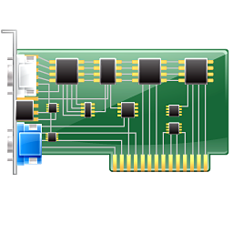

ViHard version 0.2.3
Plataforma opensource de Hardware Virtual para Sistemas Embebidos
Juan Agustin Bassi (jagustinbassi@gmail.com)
Especialista en Sistemas Embebidos - FIUBA
Documentacion oficial
Repositorio oficial
Foro oficial